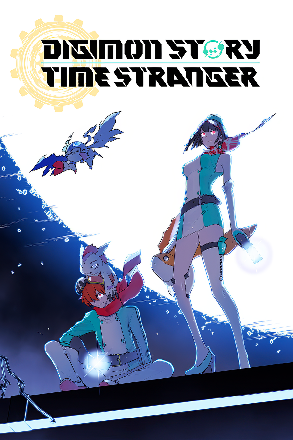

Game profile

Digimon Story: Time Stranger
Every archived year-end list appearance, including placement and points earned.
About the Game
Digimon Story Time Stranger , is an RPG with monster-taming elements that explores the deep bond between humans and Digimon in an epic story that unravels the mystery of the world’s collapse. Embark on an adventure that spans across the human world and and Digital World , collecting and raising a diverse array of Digimon to fight in turn-based battles.
| Released | 2025-10-02 |
|---|---|
| Developer | Media.Vision, Media Vision |
| Publisher | Bandai Namco Entertainment |
| Genres | RPG |
| Platforms | PC, PlayStation 5, Xbox Series S/X |
SingleplayerSteam AchievementsFull controller supportSteam CloudRPGStory RichFantasyPixel GraphicsAnimeCharacter CustomizationCute3D
Where to Buy
Game information provided by RAWG.
4List appearances
1Years represented
Points by Year
42025 points
List History
| Year | Source | List | Placement | Points |
|---|---|---|---|---|
| 2025 | GameSpot | The Best Games Of 2025 | Unranked | 1 |
| 2025 | Geeky Brummie | Top 50 Most Notable Games of 2025 | 37 | 1 |
| 2025 | NPR | The best games of 2025, picked by NPR's staff | Unranked | 1 |
| 2025 | Polygon | The 50 best games of 2025, as chosen by Polygon | 45 | 1 |